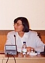

|
Autores / Authors |
NUNES, Etelvina Lopes

E-mail: enunes@facfil.ucp.ptIDENTIDADE
NOME: Etelvina Pires Lopes Nunes
DATA DE NASCIMENTO: 25 de Dezembro de 1956.
NATURALIDADE: Vergão, Concelho de Proença - a - Nova, Portugal.
PROFISSÃO: Professora do Ensino Superior.
HABILITAÇÕES ACADÉMICAS
- Licenciatura em Filosofia com especialização em Antropologia Filosofica pela Universidade Gregoriana de Roma em 1984.
- Doutoramento em Filosofia pela mesma Universidade com uma tese intitulada: O Outro e o Rosto - Problemas da Alteridade em Emmanuel Levinas, em 1990, sob. a orientação do Prof. P. Xavier Tilliette. Reconhecimento do diploma de Doutoramento pela Universidade Católica Portuguesa em 29 de Abril de 1993.
DOCÊNCIA
No ano de 1985-86, lecionou o programa de Filosofia ao 10 e ao 11º anos na Escola Portuguesa em Roma.
Desde o ano académico de 199-92 faz parte do Corpo Docente da Faculdade de Filosofia de Braga da Universidade Católica Portuguesa, onde Leccionou as Disciplinas de Filosofia Contemporânea e Antropologia Filosófica.
Desde o ano de 1998-99 tem leccionado apenas a Antropologia Filosófica nos cursos de Filosofia e Filosofia e Desenvolvimento da Empresa.
OUTRAS FUNÇÕES
Desempenhou as funções de coordenação da Comissão de Avaliação Interna dos Cursos da Faculdade de Filosofia de Braga nos anos de 1995-1996.
Membro da Comissão pedagógica do Curso de Filosofia, tendo desempenhado as funções de coordenação no ano de 1997-98; 98-99; 2000-2001.
Membro do Conselho Científico da Faculdade de Filosofia de Braga.
Membro da Associação Portuguesa de Fenomenologia (APOFEN)
Membro da Sociedade Científica da Universidade Católica Portuguesa
PUBLICAÇÕES
Artigos
"A condição feminina em Emmanuel Levinas", em: Brotéria 119 (1984) .
"Rosenzweig e Levinas. Alguns pontos comuns", em: Brotéria 122 (1986) 517-526.
"O Rosto e a passaagem do Infinito: Originalidade no Pensamento de E. Levinas". em Revista Portuguesa de Filosofia, (número monográfico sobre Emmanuel Levinas) 46/1 (19903-46.
"Emmanuel Levinas e Fernando Echevarría: uma aproximação, em: Rev.Port. Filos., 48 (1992) 455-466.
"Hieratismo do Rosto? Emmanuel Levinas aproximaddo dos seus interlocutores", Rev. Port. Filos. 50(1994) 291-303.
"Para uma ontologia do corpo subjectivo - a partir da obra de M. Henry", em: Brotéria 139/5 (1994) 411-423.
"Influência do Judaísmo na cultura contemporânea", em: Comunio XII(1995) 269-279.
"À memória de Emmanuel Levinas" (1906-1995), em: Rev.Port. Filos. 51 (1995) 728-732.
"Para uma nova Justiça, em: Rev. Port. Filos. (Homenagem ao Prof. Doutor Lúcio Craveiro da Siva, 52(1996) 617-632.
"Geórgicas de Fernando Echevarría: um itinerário para o Ser", em: Uma lavoura de luz interior, estudos em Homenagem ao poeta Fernando Echevarría, nos seus 70 anos, Universidade Católica Portuguesa, Cooperativa Árvore e Edições Afrontamento, Porto, 1999.
Livro:
O Outro e o Rosto: Problemas da Alteridade em Emmanuel Levinas, Publicações da Faculdade de Filosofia, Braga, 1993.
INVESTIGAÇÃO
A sua principal área de interesse centra-se na Antropologia Filosófica, onde confluem necessariamente outras áreas como a Ética a Antropologia, a Filosofia do Conhecimento e as Ciências Sociais e Humanas em geral.